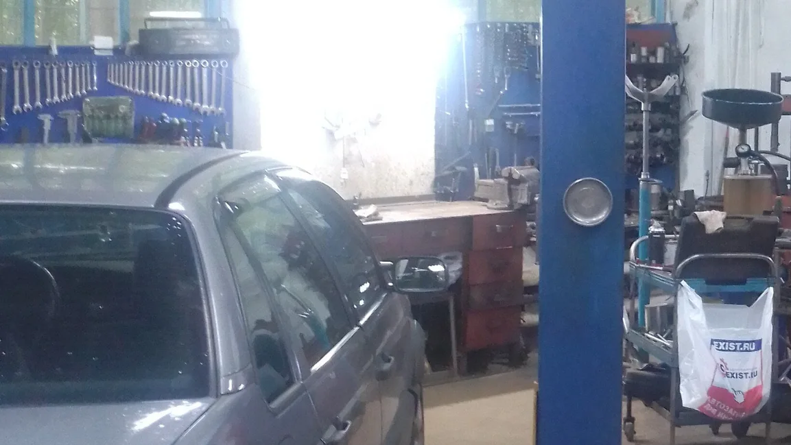

Автосервис и диагностический центр · ул. Королёва, 6, Обнинск
Автосервис в Обнинске: запись на время, быстрый ремонт
Диагностика, обслуживание и ремонт ходовой. Работаем с понедельника по пятницу с 8 до 17 без перерыва. Запишитесь на удобное время.
- 4,4 на Яндекс Картах, 16 отзывов
- Пн-Пт 08:00-17:00, без перерыва
- В отзыве: «к обеду уже всё готово»

Услуги автосервиса Автосервис 40 в Обнинске
Что входит в услуги
- Диагностика: осматриваем автомобиль и находим причину неисправности
- Базовое сервисное обслуживание: плановое обслуживание автомобиля
- Ремонт ходовой части: подвеска и всё, что рядом с ней
- Ремонт автомобиля: после диагностики согласуем с вами список работ
Запись, адрес и режим работы
- Работаем с понедельника по пятницу с 08:00 до 17:00 без перерыва, суббота и воскресенье выходные
- Адрес: Обнинск, улица Королёва, 6. Ищите ворота с красной табличкой «Режим работы»
- Запись по телефону +7 (953) 324-00-37 или через форму на сайте
Цены на ремонт и обслуживание автомобилей в Обнинске
Стоимость называем после осмотра и согласуем до начала работы: она зависит от автомобиля и от того, что нашли.
Диагностика и обслуживание
- Диагностика автомобиляуточнить
- Базовое сервисное обслуживаниеуточнить
Ремонт
- Ремонт ходовой частиуточнить
- Ремонт автомобиля по результатам диагностикиуточнить
Точную стоимость называем после осмотра автомобиля.
Как записаться в автосервис в Обнинске
- 01
Выбрали услугу и время
Укажите услугу, день и час в форме на сайте и позвоните: +7 (953) 324-00-37. Мы принимаем с понедельника по пятницу.
- 02
Рассказали, что беспокоит
Назовите марку и год автомобиля и что происходит: стук, скрип, ошибка на панели. Подскажем, с чего начать.
- 03
Осмотрели машину
Мастер смотрит автомобиль, находит причину и говорит, что нужно сделать.
- 04
Решаете, что делать
Называем, что нужно сделать и сколько это стоит, до начала работы. Согласны - делаем. Нет - забираете машину.
Почему выбирают Автосервис 40 в Обнинске
Ремонт быстрый
«Прекрасные специалисты своего дела. Ремонт быстрый и качественный» - ирина к., 29 августа 2024.
Входят в положение
«Ребята из автосервиса 40 не отказали, вошли в положение, помогли» - Марина Королева, 6 января 2024.
Знают своё дело
«Головы и руки у персонала работают профессионально. Можно доверить работы любой сложности» - Michail Deev, 25 марта 2024.
Возвращаются годами
«Обслуживаюсь уже более 10лет. Всегда быстро, качественно, без обмана» - Илья Уксусов, 21 февраля 2023.
Отзывы об автосервисе Автосервис 40 в Обнинске
«Добрый день, сервисом довольна, очень понравилось. Машину можно сдать в 7 утра и к обеду уже всё готово. Все на высшем уровне.»
Дарья С. · 29 июня 2025
«Ооооо, здесь ремонтирую все свои авто на протяжении 7 лет!!!! Профессионалы с высокой буквы!!! Всем рекомендую!!!!»
Сергей Борисов · 2 ноября
«Добрый день. Очень доволен ремонтом машины, спасибо большое Мартину, очень хороший специалист, побольше бы таких мастеров. Удачи Вам во всем и побольше клиентов.»
Марат Х. · 3 мая
Отзывы с карточки на Яндекс.Картах, без правок.
Частые вопросы об автосервисе в Обнинске
Как записаться в автосервис в Обнинске?
Выберите услугу, день и время в форме на сайте и позвоните по номеру +7 (953) 324-00-37. Мы принимаем с понедельника по пятницу, последнюю машину на сегодня берём до закрытия в 17:00.
Где находится автосервис?
Обнинск, улица Королёва, 6. Вход через ворота с красной табличкой «Режим работы».
До скольки вы работаете и работаете ли в выходные?
Работаем с понедельника по пятницу с 08:00 до 17:00 без перерыва. Суббота и воскресенье - выходные.
Сколько стоит ремонт и диагностика?
Стоимость зависит от автомобиля и от неисправности. Мы осматриваем машину, находим причину и называем цену до начала работы. Согласны - делаем, нет - забираете автомобиль.
Можно ли оставить машину утром и забрать днём?
Для многих работ - да: оставляете машину утром, к обеду бывает уже готово. Срок зависит от работы, мы называем его после осмотра.
Как проходит диагностика автомобиля?
Вы рассказываете, что беспокоит, мастер осматривает машину, находит причину и объясняет, что нужно сделать. Решение за вами.
Делаете ли вы ремонт ходовой части?
Да. Ремонтируем ходовую часть и подвеску. Что именно нужно вашей машине, скажем после осмотра.
Делаете ли вы плановое обслуживание?
Да. Делаем базовое сервисное обслуживание. Напишите марку и год автомобиля при записи - подскажем, что входит.
Запишитесь в автосервис в Обнинске
- Адрес
- улица Королёва, 6, Обнинск
- Часы
- Пн-Пт 08:00-17:00 без перерыва, суббота и воскресенье выходные
- Телефон
- +7 (953) 324-00-37